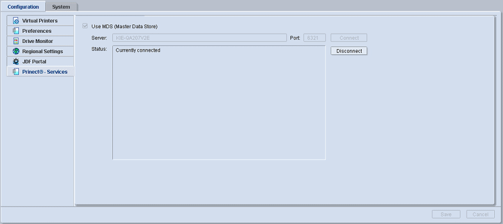

Вы можете подключиться к Магазину данных в этой вкладке. Для этого требуется, чтобы активный Магазин данных был доступен в сетевом окружении или на ПК Prinect Shooter (например, если он был настроен вместе с Prinect MetaDimension или Prinect Integration Manager).
Master Data Service обеспечивает централизованное управление так называемыми «основными данными» для всей системы Prinect. Мастер-данные — это информация, которая управляется централизованно и используется в нескольких местах в рабочем процессе Prinect. Например, Prinect Shooter может использовать материалы и пользовательские данные, которые управляются в MDS. Наоборот, Prinect Shooter отправляет профили устройств IPR (см. Создание IPR) автоматически в Магазин данных Master, таким образом делая их доступными в пределах района Prinect, если Prinect Shooter подключен к Магазину данных Master.

1. Активировать опцию «Использовать MDS (Master Data Store)».
2. В «Сервере» введите имя сети или IP-номер компьютера, предоставляющего Магистерскую службу хранения данных. Это может быть, например, сервер Prinect Integration Manager или другой компьютер в сети, на котором установлен Магазин данных.
3. Введите номер порта «6321» в «Порту». Этот порт используется Master Data Storage.
4. Нажмите «Подключить». Соответствующее сообщение о статусе появляется, если соединение успешно.
5. Нажмите «Отключить», если вы хотите отключиться от Магазина данных, например, потому что вы хотите перейти от MDS Prinect MetaDimension к установленной с Менеджером интеграции Prinect. Затем введите имя сети или IP-адрес главного сервера данных Prinect Integration Manager в поле «Сервер» и нажмите «Связаться».
Вы можете просмотреть информацию о подключении к Магазину данных в разделе «Статус».
Copyright © 2013 Heidelberger Druckmaschinen AG